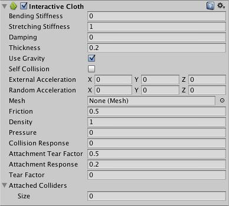
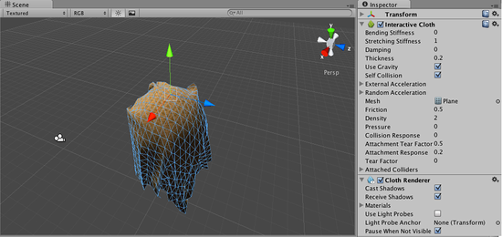

Thank you for helping us improve the quality of Unity Documentation. Although we cannot accept all submissions, we do read each suggested change from our users and will make updates where applicable.
For some reason your suggested change could not be submitted. Please try again in a few minutes. And thank you for taking the time to help us improve the quality of Unity Documentation.
The Interactive Cloth class is a Component that simulates a “cloth-like” behavior on a mesh.

Properties
Property:
Function:
Bending Stiffness
Bending stiffness of the cloth.
Stretching Stiffness
Stretching Stiffness of the cloth.
Damping
Damp cloth motion.
Thickness
The thickness of the cloth surface.
Use Gravity
Should Gravity affect the cloth simulation?.
Self Collision
Will the cloth collide with itself?.
External Acceleration
A constant, external acceleration applied to the cloth
Random Acceleration
A random, external acceleration applied to the cloth
Mesh
Mesh that will be used by the interactive cloth for the simulation
Friction
The friction of the cloth.
Density
The density of the cloth.
Pressure
The pressure inside the cloth/
Collision Response
How much force will be applied to colliding rigidbodies?.
Attachment Tear Factor
How far attached rigid bodies need to be stretched, before they will tear off.
Attachment Response
How much force will be applied to attached rigidbodies?.
Tear Factor
How far cloth vertices need to be stretched, before the cloth will tear.
Attached Colliders
Array that contains the attached colliders to this cloth
Details
The Interactive Cloth Component depends on the Cloth Renderer Component, this means that this component cannot be removed if the Cloth Renderer is present in the Game Object.

Interactive cloth in the scene view and its properties in the inspector.
Hints
Using lots of cloths in your game will reduce exponentially the performance of your game.
If you want to simulate clothing on characters, check out the Skinned Cloth component instead, which interacts with the SkinnedMeshRenderer component and is much faster then InteractiveCloth.
To attach the cloth to other objects, use the Attached Colliders property to assign other objects to attach to. The colliders must overlap some vertices of the cloth mesh for this to work.
Attached Colliders’ objects must intersect with the cloth you are attaching to.
Notes
Cloth simulation will generate normals but not tangents. If the source mesh has tangents, these will be passed to the shader unmodified - so if you are using a shader which depends on tangents (such as bump mapped shaders), the lighting will look wrong for cloth which has been moved from its initial position.
Moving cloth by directly changing object’s transform is not supported. Cloth is being simulated in world space and does not get any changes you make in transform. In case you really want to move the cloth directly without applying any forces you are free to transform all cloth vertices manually.
Disabling the cloth before changing the transform also works because when you re-activate the cloth, it basically gets re-created in initial state with new transform.
So, when you want to move cloth, you have two options: transform all cloth vertices directly or disable the cloth before setting the transform.